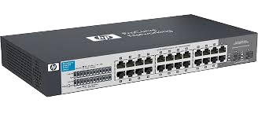

Uma rede é uma conexão entre máquinas que trazem e levam informações entre si. Uma rede usa o protocolo de comunicação ICMP. A comunicação entre máquinas pode ser por fios ou sem fios.
Testa para ver se é possível realizar uma conexão com um servidor e retorna o tempo que leva.
Número máximo de máquinas que os dados do pacote enviado (requisição) podem passar
Tracerout que informa qual o caminho de roteamento entre dois dispositivos (por quais servidores o meu pacote de dados passa).
Protocolo usado em dispositivos de rede, como roteadores.
Traduz o endereço de um domínio e retorna o IP. Pode ser usado para saber se o serviço é direcionado para a máquina de destino.
Uma conexão por cabos pode ser realizada entre duas máquinas (necessário crossover), ou entre várias máquinas por meio de um hub (necessária conexão direta). Os fios dos cabos seguem dois padrões: T568A e T568B. Segue um exemplo de fios entre duas máquinas, bem como o fluxo dos dados de uma para a outra:
Um Hub é um equipamento que recebe várias conexões de máquinas, recebendo pacotes de cada máquina e enviando um pacote resposta para todas as máquinas conectadas, independentemente se foi requisitado ou não pela máquina (Broadcast). Por meio do HUB, podemos conectar vários dispositivos entre si, mas possui desvantagens em questões de segurança (usuário malicioso recebe os dados das outras máquinas), e desempenho (lento porque envia as respostas para todas as máquinas conectadas).
